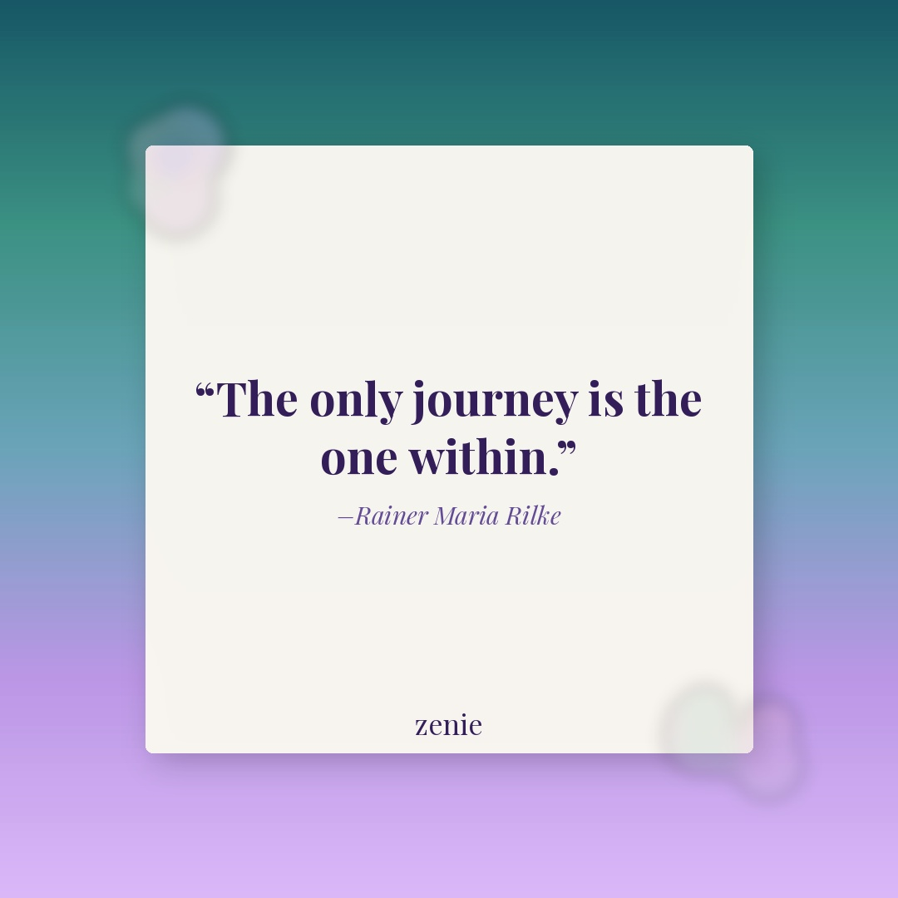
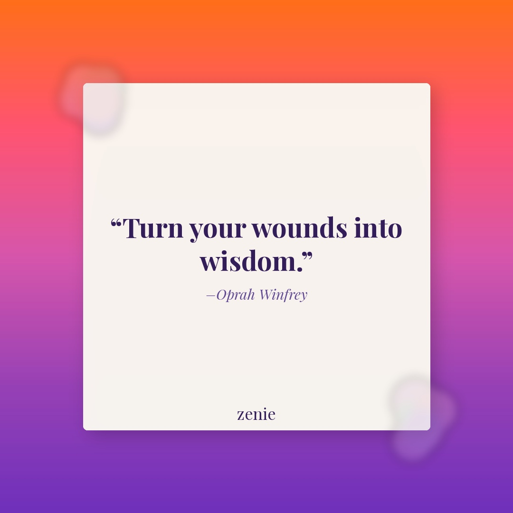

Meme 1 — Dating/Healing IGFB
IG: The glow up is internal ✨
FB: Okay ladies, we are DONE accepting bare minimum in 2026. 😤 Are you in your healing era? Drop a 💜 if you're finally choosing YOU.
Best time: Tuesday, 7–9 PM EST
IG: The glow up is internal ✨
FB: Okay ladies, we are DONE accepting bare minimum in 2026. 😤 Are you in your healing era? Drop a 💜 if you're finally choosing YOU.
Best time: Tuesday, 7–9 PM EST
IG: She journaled once and became her own bestie 📓
FB: The way journaling genuinely changed my whole perspective... anyone else feel like a completely different person after being consistent for just 2 weeks? Tag your journal buddy! 📖
Best time: Wednesday, 7–9 PM EST
Creator: @thejournallab
Self-care and journaling in the same breath 💜 When did you last give time back to yourself? Save this as your reminder to start today. 📓 @thejournallab #Zenie #ZenieApp #JournalingLife
Watch ReelBest time: Saturday, 9–11 AM EST
Creator: (verify handle before posting)
Healing is the foundation of every healthy relationship — starting with the one you have with yourself. 🌿 Save this and share it with someone who needs to hear it today. #Zenie #ZenieApp #HealingJourney
Watch ReelBest time: Sunday, 9–11 AM EST

FB: Some journeys don't require a suitcase. 🌿 Take 10 minutes today to check in with yourself — your inner world is worth exploring. Save this for your next quiet moment. 💜
Best time: Thursday, 12–2 PM EST

FB: Every scar has something to teach us. 💜 What's one wound that has made you stronger? Share in the comments — your story might be someone else's lifeline.
Best time: Friday, 12–2 PM EST